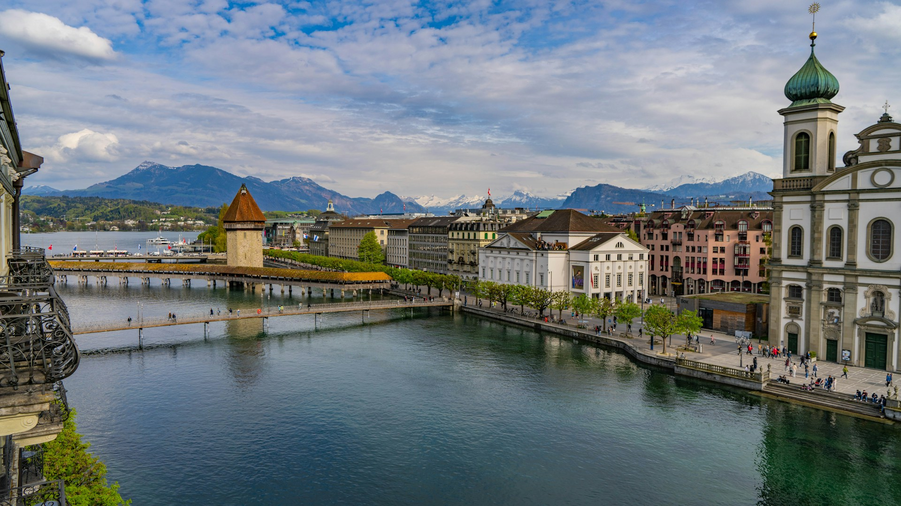
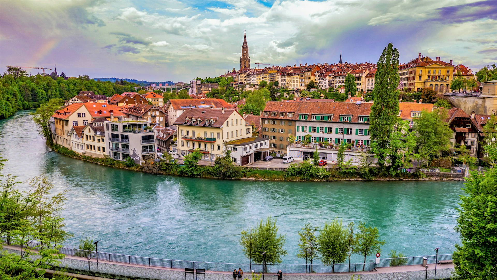
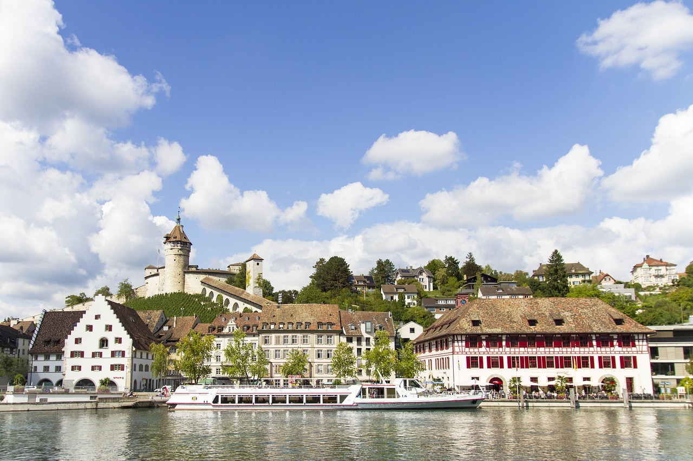

Lucerna
Ciudad pintoresca a orillas del lago con arquitectura medieval.
- ⭐ Destacado: Puente Kapellbrücke
- ⏱ Tiempo recomendado: 1 – 2 días
- 🚶 Actividad: recorrer el casco histórico
Suiza cuenta con ciudades llenas de historia, cultura y arquitectura impresionante.

Ciudad pintoresca a orillas del lago con arquitectura medieval.

La ciudad más grande de Suiza y su centro financiero.

Capital de Suiza con centro histórico medieval.

Ciudad histórica cerca de las Cataratas del Rin.